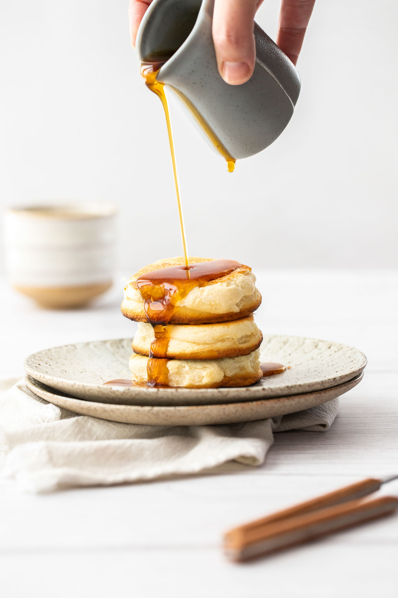

Fluffy Pancakes

Description
This Japanese-style pancake recipe makes fluffy pancakes that are so delicious, you might eat them without butter or syrup.
The recipe is so simple that anyone can make it. Serve them right from the griddle or pan.
Ingredients
- 1 ½ cups all-purpose flour
- 2 teaspoons baking powder
- 2 eggs
- ¼ cup brown sugar
- ⅔ cup milk
- ½ teaspoon vanilla extract
- 1 teaspoon oil, or as needed
Steps
- Mix flour and baking powder together in a bowl.
- Beat eggs and sugar in a bowl with an electric mixer on medium speed until well blended. Slowly mix in flour mixture; batter will thicken rather quickly. Slowly blend in milk, then vanilla extract.
- Lightly oil a griddle and heat over medium-high heat. Working in batches as necessary, drop batter by large spoonfuls onto the griddle and cook until bubbles form and the edges are dry, 3 to 4 minutes. Flip and cook until browned on the other side, 2 to 3 minutes.